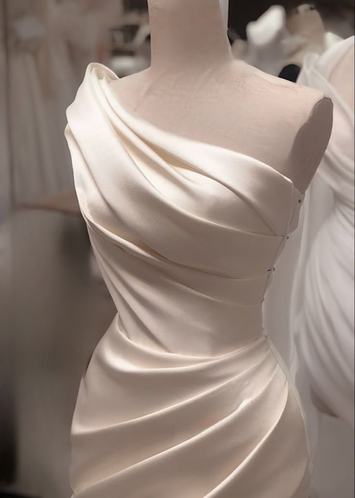
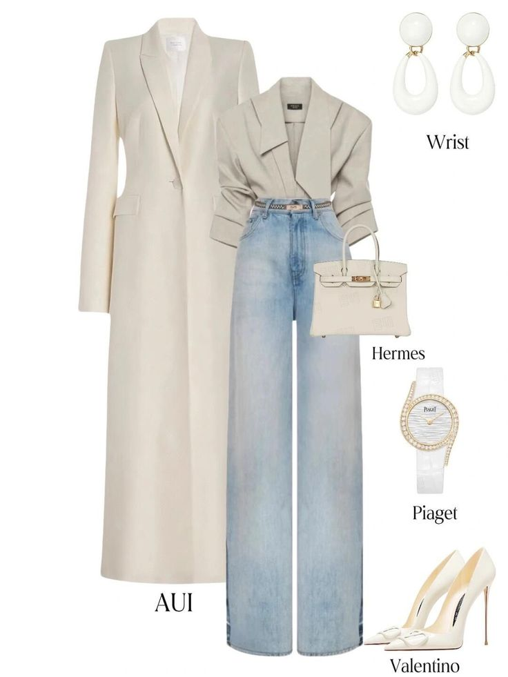
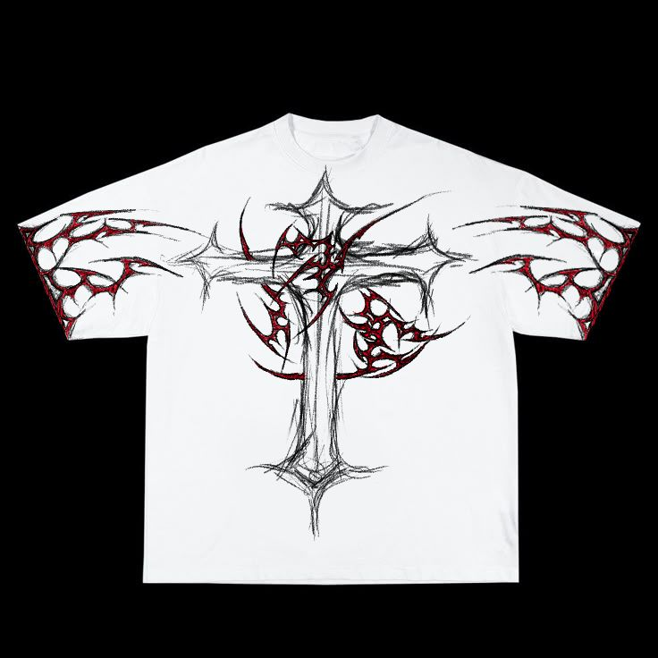

Permanent Visibility
Even when a piece is sold, it stays visible—preserving inspiration and authorship without the pressure of a social timeline.
Even when a piece is sold, it stays visible—preserving inspiration and authorship without the pressure of a social timeline.
One-of-a-kind

Concept piece

One-of-a-kind
